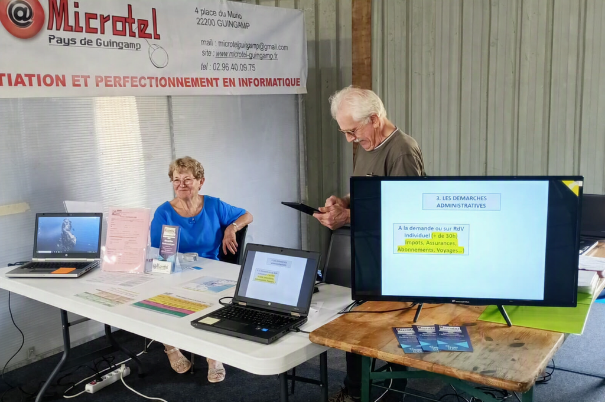
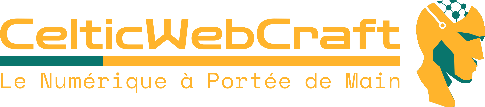

En cours
Refonte du site Microtel
Refonte UX/UI et développement d'un site associatif

PROJETS
Plusieurs projets sont actuellement en cours de finalisation. Ils apparaîtront bientôt dans cette section.

En cours
Refonte UX/UI et développement d'un site associatif
Aperçu à venir
En cours
Identité visuelle, responsive, développement et mise en production
Aperçu à venir
En cours
Conception d'une expérience CV en ligne, navigation dynamique et valorisation parcours